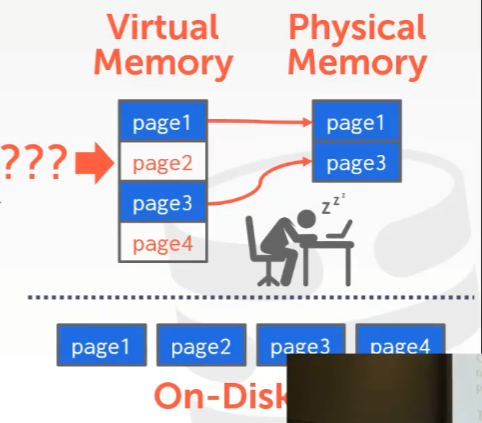
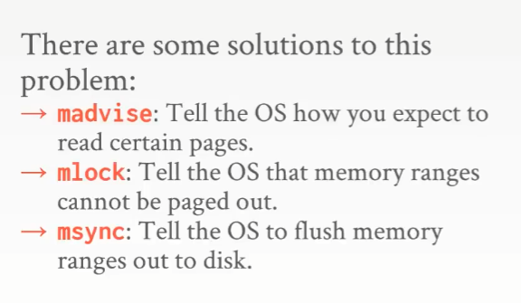
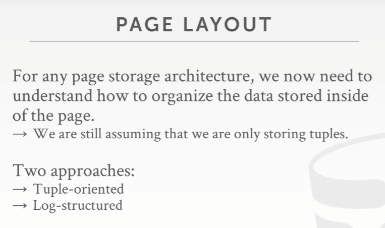
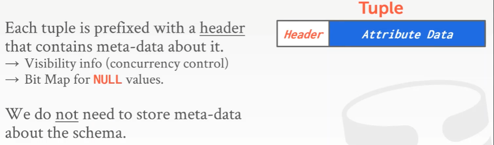

注: 本文首发我的 b 站专栏文章CMU 15-445/645-笔记-03-数据库存储-part1
课程目标
- DBMS 是怎么用磁盘上的文件来表示数据库的（主要是这个）
- DBMS 是怎么管理内存的，是怎么在磁盘间来回移动数据的
课程大纲
上述展示的就是一个数据库中应该包含的东西，一个数据库就是建立在这些层面之上
面向磁盘的数据库架构
由于这门课是面向磁盘（Disk-Oriented）的数据库管理系统，即数据库的主要存储位置都是放在磁盘上的，意味着每次执行查询时，所要访问的数据都不在内存（Memory）中。所以在设计这个数据库管理软件时，要基于一些假设来设计一系列的组件，来保护这个数据库系统，使其免于数据丢失、保存无效或错误的数据等情况。
此外还需要区分
- 易失性存储
非易失性存储
简单来讲就是，我们所要的 数据系统 管理了数据从非易失性存储到易失性存储的移动
计算机的存储结构如图所示
越上面的容量越小，速度越快，也越贵
越下面的容量越大，速度越慢，也越便宜
注意这里在 DRAM 和 SSD 有条分界线，这里就是易失性和非易失性存储的分界
需要稳定的能量（电能）维持它所存储的东西的存储设备，叫做易失性存储，那么反之就是非易失性存储
如果数据是保存在易失性存储设备中，那么它就支持 快速随机访问，即无论在什么位置访问数据，访问数据的顺序是怎么样的，访问的速度都大体一致
- 如果数据是保存在非易失性存储设备中，由于它们具备的是 块寻址（非字节寻址） 能力，无法准确地得到数据的 位大小的数据（32bit, 64bit），所能得到的是包含要访问的数据的 块（Block） 或者 页（Page）
但是在非易失性存储设备中，比起随机读取不同位置上的内容，它能更有效率地去读取一段连续的 块 中的内容。所以对于非易失性存储来讲，是希望按顺序读取的数据量越大越好
Memory 和 Disk 的区分
现在已经没人用磁带机来存数据了，但是可用来做容灾
Network Storage 现在指类似于 Amazon 的 EBS 或者 S3 之类的东西
实际上在分割线处还有新的一类存储设备，它被称之为非易失性内存（Non-Volatile Memory）
比如 Intel 的 傲腾（Optane）内存，牙膏厂虽然是第一个发布这种内存的厂商，但这类技术的研究已经有 15-20 年左右的历史了
它可以像 DRAM 一样，可以插在 DIMM 槽内，却具备 字节寻址 能力，也可以像 SSD 那样，断电也能持久保存数据。
但残念的是，目前这种既能又能的存储设备并没有被广泛应用
顺便老师在课上写的这本书有卖吗？
一张关于各种存储设备的访问耗时表
系统设计目标
目标就是，给应用程序提供一种错觉，即这个系统能提供足够的内存，能把整个数据库导入到内存中。并且最小化每次从磁盘读取/查询内容所带来的影响
比如这种最小化的方式可以通过以下几种方式达到
- 允许在同一时间运行不同的线程/查询
- 缓存
提前计算某些数据
一个访问磁盘数据的示意图
可以看到有几个关键的地方，Directory、Buffer、Page
那么这个有点像什么呢？– 虚拟内存
那么操作系统能做这件事，为什么还这样设计而不直接使用操作系统来做呢？
注意 mmap 指的是 maps files or devices into memory
虽然操作系统可以利用虚拟内存通过 mmap 来映射到文件，但是这只适用于 只读 的访问，对于有多个 writer 的情况就复杂很多了
因为操作系统并不知道某些 pages 必须要先于其他 pages ，从内存刷到磁盘，这里有一个竞争的关系
那么有没有解决方案呢？有的

使用 madvise 告诉 OS 怎么去访问某些页面（顺序/随机读取）
- 使用 mlock 阻止 pages 被 OS 回收（尽管可以被锁定但并不能阻止它被写出到磁盘）
使用 msync 告诉 OS 要把数据刷到磁盘中
使用 mmap 和 部分使用 mmap 的 Database
实际上 MemSQL 已经完全摆脱了 mmap
- SQLite 有一个特殊的引擎，在嵌入式设备上 mmap 是可选的，默认情况下用不到
- InfluxDB 只有在只读缓存上才使用 mmap
mongoDB 第一次被开发出来时，它的默认存储引擎用的就是 mmap，但为了让这个引擎能正常工作，开发人员也做了很多无用功，因为这里面存在着巨大的瓶颈，然后等他们筹到很多钱之后，就把 mmap 干掉了，再然后他们买了一个叫做 WiredTiger 的非 mmap 的存储引擎
注意这张图里面少了很多主流的 Database，比如 MySQL，Oracle，DB2 以及 SQL server，这些数据库都没有使用 mmap，因为 mmap 是一个糟糕的想法，因为缺少人为写代码去控制这种行为。
所以如果 mmap 是一个好的想法，那么这群土豪（指 mongoDB）手下的顶级工程师肯定能证明这的确是，然后并没有（哈哈哈哈好好笑）
老师痛恨 mmap
毕竟操作系统啥也不懂，它只看到了一些读写和调用（
文件存储
数据库其实就是磁盘上的一堆文件，SQLite 把数据库存储为一个文件，而其他大部分数据库比如 PostgreSQL 则会把这些分为多个文件来存储，因为数据库可能非常大，甚至可能有 PB 级别的数据量，你不会想要对这么大的一个文件做错误修复
现在的一些”企业级”的数据库系统还支持自定义的专属文件系统，但近些年的一些数据库系统已经不支持了，因为非常不值得，要管理这种文件系统是一个很大的坑，同时也大大降低了可移植性。
存储管理器
存储管理器也叫存储引擎，它负责维护磁盘上的数据库文件。
某些高端数据库系统在文件系统之上还有一个 shim 层，它允许数据库去做一些磁盘的调度，这就像是可以通过一堆线程来对彼此邻近的区块进行写入，也可以将这些区块合并后做一次写入请求。
Database Pages
一个 page 的集合，就是这一堆文件的一个组织形式。本质上来讲，一个 page 就是一个固定大小的数据块
self-contained 的意思是，page 的内容必须存储在 page 本身内。比如 Orcale 就需要将描述该 page 中内容的所有元数据，和这些内容数据一起保存在该 page 中，避免数据库故障的时候你找不到，这样即便丢了一个 page，也不会影响其他的 page
indirection 层允许将一个 page ID 映射到某个集合中一个文件的某个位置。相当于记录一个相对位置，方便文件整体移动后，只要知道整体文件的初始位置，依然可以通过该相对位置即 page ID 找到某个文件某个位置的数据所对应的 page。因为一个 page 的大小是固定的，page ID * page Size 即为 offset
一些 page 的概念
Database Page 大小各有不同
但我们更需要关注的是 Hardware Page 的大小，因为它是原子的，即一次只能写入这么大的 page 数据，如果超过了，那么剩下的数据就会丢失写不进去，写入失败也不会回滚，数据就会损坏
高级数据库可以设定它们自己 page 的大小
那么为什么有些数据库系统使用的是空间更大的 page 呢？
这里是有一些权衡的，比如在数据库系统的内部，通过内存中的 Page 目录将 page 映射到内存或者磁盘上的某个位置，如果现在用一个 page ID 来表示一个更大量的数据，那么一个表所占用的大小就会变小。因为固定容量下，一个 ID 表示的数据量越大，那么它所需要的 ID 数也越小。比如 CPU 中 TLB（页表缓存），如果尝试去匹配所有的 page，那么 page 表将会变得非常的大，然后就会出现 cache misses 的现象。因为 page ID 表示的数据范围太小，在高速缓存中无法全部命中。所以这里可以通过更少的 page ID 来表示更多的数据
Page 存储架构
比较重要的就是 Heap File Organization
Database Heap
数据库中的 heap 文件是一个无序的 page 集合，即可以以随机的顺序把 tuple 数据存储在里面
链表来实现一个 page 是很 low 的，更好的方案是使用 Page 目录
Heap File: 链表
这里的例子中，如果要支持反向查找，那还得是一个双向链表
如果需要在 page 中 insert 一些东西，那么还是需要对这个链表做遍历，直到找到 free page 为止，在这个位置 insert。为什么需要遍历，因为有些 page 的剩余空间可大可小，所以需要遍历到那个足以容纳下要 insert 的数据的一个剩余空间里面去
写数据时需要注意的问题，即数据写一半，写满一个出了问题，后一半还没来得及写，数据就会损坏，所以要保证写数据的原子性和完整性，需要做很多工作
写入数据崩溃，如何查找原因？使用 checksum，类似于 CRC 或者 md5
Heap File: Page 目录
Page 目录是一个通常的做法，好处是假如想要插入一些数据时，没必要像链表那样对整个链表做一次遍历，只需要在 Page 目录中做查找就可以。例子中的每个小格中不仅有对应 page 所在位置，也包含了 page 剩余空间的信息
Page 头
Page 层

面向 tuple 的组织方式
这种组织方式是一个 bad idea，为什么呢？
- 如果 tuple 都是固定长度的，那么要增删 tuple 的话，通过将其移到一个新的空间来取代这个老的空间就可以了不是么（联想到了 V8 的新生代老生代的 GC 算法了）
- 如果 tuple 不是固定长度的，那么你插入 tuple
的那个位置可能就没有足够的空间 每次要增删 tuple 时，都需要维护顶部的元数据，也就是 Num Tuples，告诉你哪个位置能插数据，或者遍历整个 page 看看哪里能插
但更好的方式是使用 slotted pages
在顶部有一个称之为 slot 数组 的东西，在底部则用来保存想要保存的数据
本质上来讲，slot 数组是将一个特定的 slot 映射到 page 上的某个 offset 上，根据这个 offset，就能找到想找的哪个 tuple
注意 slot 存的是 offset
而填充 page 的方式是
- 从前往后对 slot 数组进行填充
从后往前对数据进行填充
什么是 page 已满，指的是数据占用了该 page 的一半以上的大小，再也无法存入任何信息了
当然也可以用一种 Postgres 中的 vaccum 的操作来整理数据库，或者使用压缩，也可以对数据库进行扫描并整理碎片
对于这种例子来讲，肯定是不能把视频存在数据库里面的，因为单个 page 根本放不下它。
一般来讲，要存 tuple 不应该分散地存在多个 page 上，因为维护元数据很麻烦。最好是当我们想要去访问这个 tuple 的时候，它就在这个 page 上。
为什么需要这么组织结构呢？
因为不管是将数据库文件中的 page 移动到磁盘还是网络上，系统的其他部分都不会关心这个 page 实际移动到了哪里，因为有 page ID 的存在，就可以通过 Page 目录来找到它实际所保存的位置，而这些 indirection 层避免了这些位置的更新会传播到系统的其他上层部分。比如某些 GC 算法，只需要保证对象间的引用关系就好，对象存在内存的哪个位置会随着 GC 的进行而变化，page ID 有有点像是在维护这个引用关系
日志结构的组织方式
// Todo:
主要这里 3-1 没有讲到
Tuple 层
注: 课程时间不够，这里是简略版本

一个 tuple 基本上就是一串字节，数据库的工作就是再次解释这些字节的实际含义
Tuple 头

通常没必要将该 tuple 的元数据保存在这个 tuple 里面，因为更高级的元数据信息保存在这个 tuple 对应的 page 中，但可以可以放在 catalog page 里
Tuple Data
通常大部分数据库系统会按照它们创建时的顺寻进行存储，我们知道在关系模型中没必要这么做，但是大部分系统都做了
Denormalized Tuple Data
如果来自不同表的数据保存在同一个 page 中，会发生什么问题？
注意这里大部分数据库系统都不会这么做，因为如果想让 page 变得独立，那么也就不应该去保存一大堆关于不同表的额外的元数据。当对表进行反范式化设计或者对表进行 prejoin 时，就会出现上述图中的情况，也就是数据冗余，一个 page 中存在多个表数据，更新、删除、或者压缩都要对多个表进行处理而数据库规范基本上就是讲如何讲数据库拆分到不同的表中（使用外键时就自然拆分了）
下面是一个反范式化的处理例子，将 bar 的 tuple 直接内嵌在 foo 的 tuple 中
因为每个 bar 表中的 tuple 复制了 a 属性，如果将它打包进 foo 表的 tuple 中，就没必要重复记录这些数据了，foo 表所拥有的这些列对其他表来说是独一无二的，就像是 prejoin 一样，将 tuple 彼此包装在一起。这样，应用程序依然觉得，这个 db 里面有两张单独的表，但在 db 内部，page 实际上会将它们合并在一起
但这并不是什么新鲜东西，早在 1970 年代，IBM 在发明它们第一个关系型数据库 System R 的时候，就引入了这个概念
然而当 IBM 做出了 DB2 之后，这个方式就被废弃掉了，因为维护它很操蛋
System R 是 IBM 发布的第一个关系型数据库，但 IBM 并没有将它商业化，也没有卖掉，10 多年之后，IBM 抽取了 System R 中的部分代码，做出了 DB2
实际上在更现代的数据库系统中也出现了这种反范式化的设计
- G 家的 Cloud Spanner，如果你定义了一个 Protobuf API，那么你就可以将两张不同表的数据合并在同一个 tuple 中
- 10 年前有一个叫 Akiban 的初创公司，他们把他们的存储引擎卖给了 MySQL，MySQL 就可以做到这种反范式化的操作。然后他们被 Foundation DB 收购，之后 Foundation DB 又被苹果收购
- 一些文档型数据库或者 JSON 数据库也能做到。比如你在定义你的 JSON document 时，就可以预先对相关属性进行 join 操作
记录 ID
保存元数据的大小
- PostgreSQL CTID（4 bytes）
- SQLite ROWID（8 bytes）
- Oracle ROWID（10 bytes）
结论